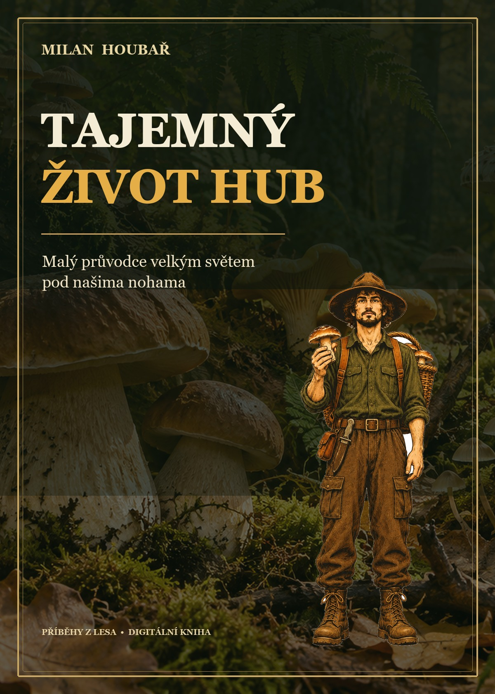
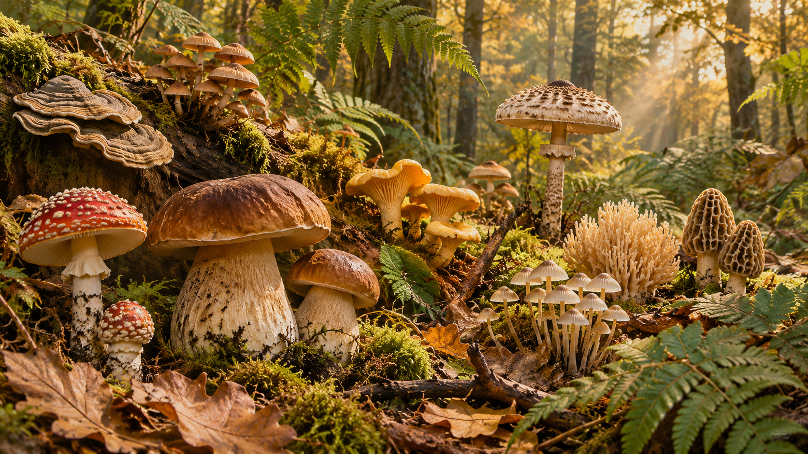
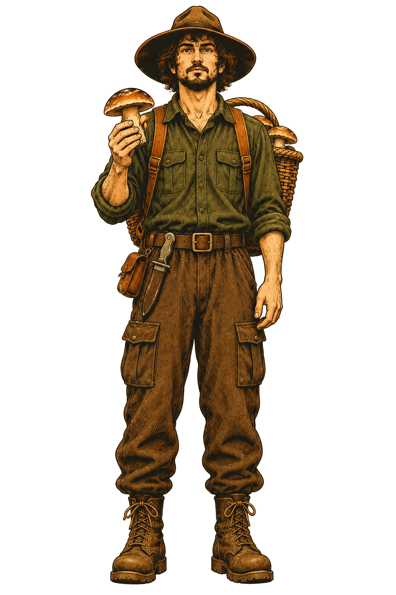

Pod každým krokem
žije jiný svět.
Objevte s Milanem neviditelný život hub, jejich překvapivá partnerství a příběhy, které se v lese odehrávají pod našima nohama.
PDF · 18 zastavení · na čtení doma i na cestách


V lese vidíte klobouk.
Ale kde je zbytek?
Pod listím a mezi kořeny se skrývá svět, který na běžné procházce snadno přehlédneme.
Houby rozkládají dřevo, šíří své výtrusy a některé spolupracují s rostlinami. Tahle malá kniha vás zve podívat se blíž — srozumitelně, zvídavě a bez zbytečných mýtů.
Co najdete uvnitř ↗Výběr z knihy
na cestě lesem.
Od neviditelných vláken po vlastní zápisník pozorovatele. Každá kapitola otevírá další drobnou záhadu.
Houba není jen klobouk
Co se skrývá v půdě, listí a dřevě?
Jak cestují výtrusy
Jak se houby šíří krajinou.
Život po pádu stromu
Proč je starý kmen začátkem, ne koncem.
Houby a kořeny
Partnerství v půdě — a kde končí metafory.
Pestrost vztahů
Od spolupráce po život na úkor hostitele.
Zápisník pozorovatele
Otázky, které si vzít na příští procházku.
Nahlédněte dovnitř.
Tři skutečné stránky z knihy. Klidné čtení, ke kterému se můžete vracet.
Ukázky z digitální knihy.
Zjistit více o knize →
Na chvíli zpomalte.
Les má co vyprávět.
Milan Houbař je ilustrovaný vypravěč, který vás provází světem hub a malými objevy přírody.
Není potřeba znát všechna jména. Stačí zvednout oči od cesty, podívat se na starý pařez a začít se ptát.
Co když je to nejzajímavější v lese právě to, co není vidět?
V knize najdete jednoduché otázky a souvislosti, které vám pomohou všímat si hub v jejich přirozeném prostředí — nejen hledat další úlovek.
Koupit knihu →Tajemný
život hub
Malý průvodce velkým světem pod našima nohama. Digitální e-book v češtině.
- 18 srozumitelných zastavení o životě hub
- Otázky pro vlastní pozorování v přírodě
- Praktický slovníček a tipy pro další čtení
- Digitální formát PDF
Pokračujte v objevování.
Tyto dva samostatné průvodce můžete přidat k objednávce na platební stránce. Každý stojí 9,90 €; jejich výběr je dobrovolný.
Milanův lesní zápisník
Otázky a prostor pro vlastní pozorování a zápisy z návštěv lesa. PDF v češtině · 9,90 €.
Rok v lese s Milanem
Nápady pro pozorování stejného místa během čtyř ročních období. PDF v češtině · 9,90 €.
Často kladené
otázky.
Je kniha určena začátečníkům?
Ano. Vysvětluje základní souvislosti jednoduše a bez předchozích znalostí.
Je to atlas jedlých hub?
Ne. Text ani obrázky nejsou určeny k určování druhů ani jedlosti. Neznámé houby nikdy neochutnávejte.
Jak knihu dostanu?
Po nákupu obdržíte přístup k digitálnímu PDF prostřednictvím Hotmart.
V jakém jazyce kniha je?
Kniha i tato stránka jsou v češtině. Jazyk platební stránky závisí na nabídce Hotmart.
Jaká je lhůta pro vrácení peněz?
O vrácení peněz můžete požádat prostřednictvím Hotmart do 15 dnů od nákupu.
Les už nikdy nebude jen kulisa.
Objevte příběhy, které se skrývají pod vašima nohama.
Koupit knihu →